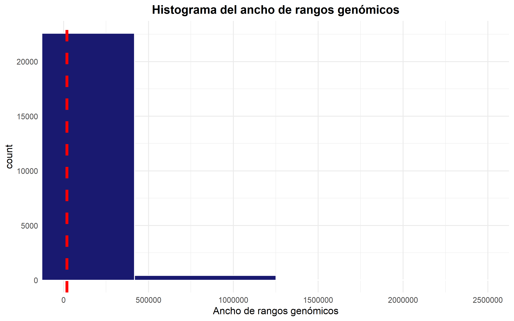

Mi nombre es Piero Palacios, y esta es la segunda parte de una serie de publicaciones que se enfocarán en enseñar el uso de rangos genómicos en R. Puedes leer más acerca de mí en la sección: Acerca de mí.
En el artículo anterior aprendimos sobre la clase IRanges, definimos que es un rango genómico, vimos cómo crear uno y aplicamos operaciones simples sobre éstos.
Lo siguiente es aprender sobre la clase GRangeList así que empecemos.
Listas de rangos genónimos
Antes de empezar con los códigos, es momento de darle más contexto biológico a los rangos genómicos. Como hemos visto, un rango genómico es la coordenada de una secuencia de interés dentro del genoma.
Si estas secuencias de interés son genes, es mucho más útil usar listas de rangos genómicos debido a que se pueden representar, de manera ordenada, grupos de interés dentro de cada gen; por ejemplo: listas de genes y dentro de cada gen, un objeto del tipo rango genómico en el cual están los exones.
GRangesList object of length 2:
[[1]]
GRanges object with 3 ranges and 0 metadata columns:
seqnames ranges strand
<Rle> <IRanges> <Rle>
[1] chr21 5-25 +
[2] chr21 12-31 +
[3] chr21 14-40 +
-------
seqinfo: 1 sequence from an unspecified genome
[[2]]
GRanges object with 2 ranges and 0 metadata columns:
seqnames ranges strand
<Rle> <IRanges> <Rle>
[1] chr21 27-40 +
[2] chr21 30-60 +
-------
seqinfo: 1 sequence from an unspecified genome
Podemos entender a grl como una lista de dos genes o dos transcriptos, y dentro de cada gen o transcripto tenemos diferente cantidad de exones.
Se puede ver la longitud de la lista, la cantidad de elementos dentro de cada elemento de la lista e incluso podemos escoger solo ver un elemento de la lista.
length(grl)
[1] 2
elementNROWS(grl)
[1] 3 2
grl[[1]]
GRanges object with 3 ranges and 0 metadata columns:
seqnames ranges strand
<Rle> <IRanges> <Rle>
[1] chr21 5-25 +
[2] chr21 12-31 +
[3] chr21 14-40 +
-------
seqinfo: 1 sequence from an unspecified genome
También se puede agregar columnas de metadatos:
mcols(grl)$values<-c(4,5)grl
GRangesList object of length 2:
[[1]]
GRanges object with 3 ranges and 0 metadata columns:
seqnames ranges strand
<Rle> <IRanges> <Rle>
[1] chr21 5-25 +
[2] chr21 12-31 +
[3] chr21 14-40 +
-------
seqinfo: 1 sequence from an unspecified genome
[[2]]
GRanges object with 2 ranges and 0 metadata columns:
seqnames ranges strand
<Rle> <IRanges> <Rle>
[1] chr21 27-40 +
[2] chr21 30-60 +
-------
seqinfo: 1 sequence from an unspecified genome
Sin embargo, al escribir el objeto grl en la consola no muestra los metadatos. La forma correcta de verlos es usando la función mcols().
mcols(grl)
DataFrame with 2 rows and 1 column
values
<numeric>
1 4
2 5
Una vez creados conjuntos de rangos genómicos o de listas de rangos genómicos, podría nacer esta pregunta: ¿Tienen rangos que se solapan?
Para esta pregunta tenemos una función llamada findOverlaps(), que como dice el nombre, encuentra las secuencias que se solapan entre dos rangos o listas genómicas.
Lo que nos dice el objeto ov es por ejemplo: el segundo rango de gr1 se solapa con el primer rango de gr2.
Otra forma de hacer esta operación es con %over%. Esta operación nos retorna resultados lógicos del tipo TRUE o FALSE para el primer rango.
gr1 %over% gr2
[1] FALSE TRUE TRUE
Estos resultados lógicos nos permiten filtrar los rangos que se solapan de la siguiente manera:
gr1[gr1 %over% gr2]
GRanges object with 2 ranges and 0 metadata columns:
seqnames ranges strand
<Rle> <IRanges> <Rle>
[1] chr21 12-31 +
[2] chr21 14-40 +
-------
seqinfo: 1 sequence from an unspecified genome
Hasta el momento sabemos crear rangos genómicos ya sea individuales o en listas y aprendimos sobre operaciones que se les pueden hacer a estos rangos. Ahora usemos los que aprendimos hasta ahora en datos reales de ChIP-Seq extraídos de células mamarias usadas para estudiar el cáncer de mama.
Aplicación en datos reales
Primero carguemos los datos de dos líneas celulares usadas para estudiar sitios de unión de proteínas receptoras de estrógeno:
library(ERBS)data("GM12878")data("HepG2")
Bien lo primero que podemos hacer es ver los metadatos y los rangos genómicos.
mcols(HepG2)
DataFrame with 303 rows and 7 columns
name score col signalValue pValue qValue peak
<numeric> <integer> <logical> <numeric> <numeric> <numeric> <integer>
1 NA 0 NA 58.251 75.899 6.14371e-72 195
2 NA 0 NA 10.808 69.685 5.02806e-66 321
3 NA 0 NA 17.103 54.311 7.93067e-51 930
4 NA 0 NA 12.427 43.855 1.35976e-40 604
5 NA 0 NA 10.850 40.977 7.33386e-38 492
... ... ... ... ... ... ... ...
299 NA 0 NA 9.681 10.057 1.42334e-08 402
300 NA 0 NA 7.929 10.047 1.44208e-08 197
301 NA 0 NA 5.864 9.990 1.63892e-08 227
302 NA 0 NA 5.660 9.948 1.79941e-08 211
303 NA 0 NA 13.211 9.918 1.92180e-08 163
Se puede ver que sólo tienen 75 secuencias en común de sitios de unión de proteínas receptoras de estrógeno.
Hemos encontrado regiones que se solapan entre las dos líneas celulares; sin embargo, también es de interés buscar regiones que estén cerca a los sitios de unión de las proteínas receptoras de estrógeno. ¿Por qué? Porque al ser dos líneas celulares diferentes, los sitios de unión también difieren. Veamos cómo hacer esto:
Adicionalmente a lo que vimos con la función findOverlaps(); la función distanceToNearest() calcula la distancia de los solapamientos y de las regiones que no se solapan. Como te habrás dado cuenta los solapamientos tienen distancia de cero y, son 303 regiones que pertencen a las 303 regiones de la línea celular HepG2.
Más datos reales
Adicionalmente a los datos reales que hemos estado analizando, usaremos un objeto de anotación que contiene información sobre los genes del ser humano.
La pregunta que podrías hacerte ahora es, ¿y a qué te refieres con un objeto de anotación?
Bueno, una imagen habla más así que primero veámoslo y verás que se explica solo:
library(Homo.sapiens)Homo.sapiens
OrganismDb Object:
# Includes GODb Object: GO.db
# With data about: Gene Ontology
# Includes OrgDb Object: org.Hs.eg.db
# Gene data about: Homo sapiens
# Taxonomy Id: 9606
# Includes TxDb Object: TxDb.Hsapiens.UCSC.hg19.knownGene
# Transcriptome data about: Homo sapiens
# Based on genome: hg19
# The OrgDb gene id ENTREZID is mapped to the TxDb gene id GENEID .
Como podrás ver, este objeto de anotación tiene información anotada de: Genes, Transcriptos (TxDb), el genoma en el que está basado (hg19), el código taxonómico e información de ontología de los genes.
Puedes pensar en toda esta información almacenada en formato de tablas, a las que puedes acceder usando funciones específicas.
Para empezar, en este post usaremos tres funciones que nos permitirán acceder a la información del objeto de anotación: genes(),exnosBy() y select() que como puedes intuir, extraen información sobre genes y exnoes. En artículos futuros ahondaremos más sobre los objetos de anotación, su creación y de la GRAN utilidad que tienen para acceder a la información genómica de interés.
Empecemos viendo el resultado de la función genes():
Ahora puedes ver mucho más el por qué de la utilidad de los rangos genómicos. La anotación h19 del Homo sapiens cuenta con 23056 genes; específicamente podemos ver en qupe cromosoma se encuentran, sus coordenadas genómicas, el sentido en el que se encuentra y el código de identificación que poseen.
as_tibble(a)%>%ggplot(aes(x=value))+geom_histogram(fill="midnightblue",color="white")+labs(title =element_text("Histograma del ancho de rangos genómicos"),x="Ancho de rangos genómicos")+theme(plot.title =element_text(hjust =0.5,face ="bold"))+geom_vline(xintercept = median_width,colour="red",size=1.5,lty=2)+geom_vline(xintercept = median_width,colour="red",size=1.5,lty=2)+coord_cartesian(xlim =c(0,2.5e6))

Finalmente, la siguiente pregunta es, ¿y como relaciono los genes del ser humano con los datos de ChIP-Seq?
La respuesta es simple, usando las funciones de solapamiento o similares. Puedes aprender más de ellas en la ayuda: ?distanceToNearest.
Para demostrar el uso de éstas funciones sobre el genoma humano primero encontremos los sitios de inicio de la transcripción de los genes con una de las funciones de rangos genómicos: resize().
Es importante recordar que estas funciones dependen de la dirección en la que los genes se encuentran en la hebra doble del ADN.
Bien, hecho esto lo que sigue es: buscar a las regiones de unión de las proteinas receptoras de estrógeno que estén cerca a genes.
¿Cómo hacemos esto? Con la función nearest().
Enfoquémonos en las secuencias consenso de las dos líneas celulares. Estas ya la hallamos arriba y las guardamos como hepg2_consenso.
Específicamente veamos a la cuarta región:
ind <-nearest(granges(hepg2_consenso)[4],sit)ind
[1] 6316
La cuarta región está cerca al gen 6316. Filtremos a este gen:
sit[ind]
GRanges object with 1 range and 1 metadata column:
seqnames ranges strand | GENEID
<Rle> <IRanges> <Rle> | <CharacterList>
2101 chr11 64073044 + | 2101
-------
seqinfo: 93 sequences (1 circular) from hg19 genome
Podemos ver que está en el cromosoma 11 y tiene el id del gen es 2101.
Ahora, ¿cómo averiguamos el nombre y símbolo del gen? Bueno esto es sencillo debido a que el objeto de anotación cuenta con esta información. Veamos cómo obtener el nombre y símbolo del gen:
#Extraemos el código de identificacióngen_de_interés<-as.character(mcols(sit)$GENEID[ind])select(Homo.sapiens,keys = gen_de_interés,keytype ="GENEID",columns =c("SYMBOL","GENENAME"))
GENEID GENENAME SYMBOL
1 2101 estrogen related receptor alpha ESRRA
Podemos ver que es un gen que tiene relación con la recepción de estrógeno, y ¡es lo que los investigadores buscaban al realizar el experimento de ChIP-Seq!
En el siguiente artículo discutiremos el manejo de secuencias de ADN como obtener el contenido de guanina-citocina, y cómo obtener secuencias específicas de rangos genómicos; por ejemplo: obtener la secuencia de un gen de interés.